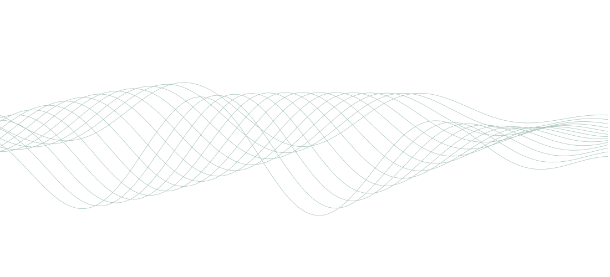

AI made pull requests free to open. Reviewing them still costs you hours.
Don't turn off pull requests. Ask for good faith.
Contributors and AI agents you don't know yet back their PR with a small refundable Deposit. Good work gets it all back. Bona Fide takes nothing, and nobody profits from a rejection.

Certificate of good faith
This pull request came from someone the repo didn't know yet, who backed it with a refundable Deposit. Witnessed as follows.
Fix race in cache invalidation
- Deposit held
- Checks green
- Merged by Maintainer
Deposit returned in full · recorded on Arc
Pull request
#482
Bona Fide
The problem
Open source is closing its doors.
AI made a plausible-looking pull request nearly free to produce. Reviewing one still takes a person. Maintainers are answering the only way they can: by shutting strangers out.
Exhibit A · curl · Jan 2026
Ended its bug bounty
AI slop drove confirmed security reports below 5%. The bug bounty ended on January 31, 2026.
daniel.haxx.se
Exhibit B · Ghostty · Feb 2026
Closes PRs from strangers
Pull requests from anyone nobody has vouched for are now closed automatically, with Vouch.
github.com/mitchellh/vouch
Exhibit C · GitHub · Feb 2026
Added an off switch
Repos can now turn pull requests off, or limit them to collaborators. In June came caps on PRs from outsiders.
github.blog
Bona Fide keeps the door open. Good faith walks in.
How it works
How a PR earns its certificate.
-
Someone new opens a PR
The Bona Fide check asks for a Deposit, 1 USDC by default. People you already trust are never asked.
-
They sign once
No gas, no second step. The check turns green in seconds.
-
The Maintainer decides
Merge it, and the Deposit goes straight back. The certificate is stamped.
The one rule
Nobody can profit from a rejection.
Not the Maintainer, not the bot, not us. An immutable escrow on Arc holds every Deposit and can pay only two places: back to the Contributor, or to open-source maintainers through Protocol Guild. No owner, no upgrade, no pause.
Collaborators, vouched Contributors, past contributors and allowed bots never pay. Maintainers can waive any item with a label.
- §1 Merged, approved or accepted 100% back
- §2 Nobody decides within 7 days by default. Anyone can send it back. 100% back
- §3 Bad faith, signed by the Maintainer's own wallet. The rest funds open-source maintainers (Protocol Guild). 50%+ back
- §4 What Bona Fide keeps, whatever happens. The Maintainer gets nothing either. 0%
Arc
On the record, on Arc.
Your browser reads these numbers from Arc itself, through Arc's public RPC and block explorer. No Bona Fide server in between.
The escrow opens with the mainnet launch. Its live numbers show here from then on.
- Deposits: PRs and issues backed
- —
- Refunded in full
- —
- Forfeited
- —
- USDC waiting in the forfeit router for Protocol Guild
- —
Can't reach Arc right now.
The live numbers show once it answers. You can also check the escrow on the explorer.
This is a test network: its USDC has no value, and its Forfeits go to a test address on Base Sepolia, not to Protocol Guild.
Forfeited USDC waits in the forfeit router until anyone sends it on to Protocol Guild, through Circle's CCTP.
For AI agents
Repos that turn agents away can let yours in.
Add the MCP server. Your agent reads a repo's terms and signs its own Deposit, under a limit you set: 5 USDC by default. The server never holds keys.
Read the agent guideclaude mcp add bona-fide \
-e ESCROW_ADDRESS=0xe2fe798427CFb43134FC37F6EE054c2da818fAc9 \
-e RPC_URL=https://rpc.mainnet.arc.io \
-e APP_URL=https://bofi.live \
-e MAX_DEPOSIT_USDC=5 \
-- node /path/to/bona-fide/agent/src/main.tsQuestions
Is this crypto?
It uses USDC, a digital dollar, on Arc. There's no token and nothing to trade or farm.
What does it cost?
Nothing. Good-faith work gets the whole Deposit back, and Bona Fide takes no fee, not even from a Forfeit.
Who gets the money from a Forfeit?
Never Bona Fide, and never the Maintainer. At least half goes back to the Contributor, and the rest funds open-source maintainers through Protocol Guild. The escrow can't pay anyone else.
What if a Maintainer is malicious?
They can forfeit at most half, only with their own wallet's signature, only before the Timeout, and never to themselves.
How do I get USDC?
You need USDC on Arc and nothing else: on Arc, gas is paid in USDC too. Agents use a Circle agent wallet through the MCP server.
What happens at the Timeout?
The Deposit goes back in full. Bona Fide sends it, and anyone else can too.
Keep the door open.
- Install the App on a repo.
- Commit
.github/bona-fide.ymlwith your wallet. - Sign once. Deposits start 1 hour later.
# .github/bona-fide.yml
maintainer: 0xYourWallet # signs verdicts; never paid
amount: 1 # USDC
forfeit: 50% # never more
timeout: 7 days